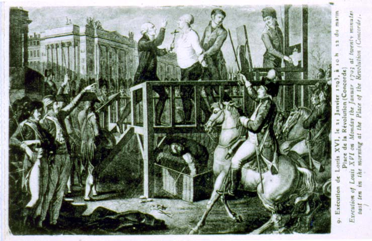

 |
| 15.
Exécution de Louis XVI, le 21 Janvier 1793 à 10h22
du matin [Execution of Louis XVI, January 21, 1793, 10:22 in the
morning] Caption: Place de la Révolution (Concorde). Execution of Louis XVI on Monday the Januar 1793 at twenty minutes past ten in the morning at the Place of the Revolution (Concorde). Source: Cornell University, Division of Rare Books and Manuscript Collections 4606.15.J20 |